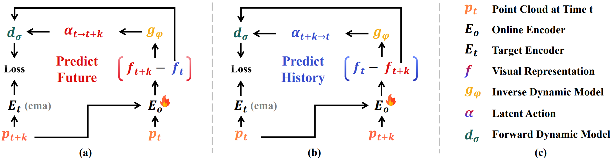
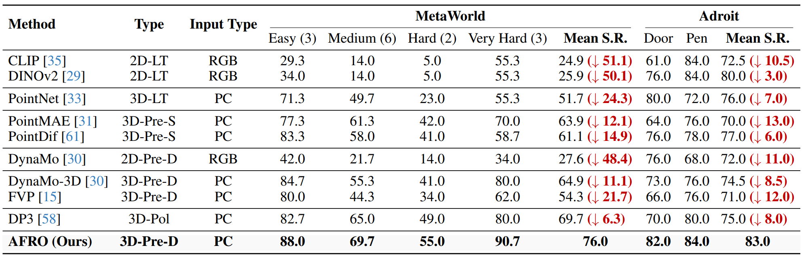

Figure 1: (a) The relationship between robot manipulation in real space and its abstraction in latent space. (b) Our framework (AFRO) learns dynamics-aware 3D visual features in latent space. (c) AFRO achieves higher success rates and stronger generalization than baseline methods in both simulation and real-world tasks.
Abstract
Despite strong results on recognition and segmentation, current 3D visual pre-training methods often underperform on robotic manipulation. We attribute this gap to two factors: the lack of state-action-state dynamics modeling and the unnecessary redundancy of explicit geometric reconstruction.
We introduce AFRO, a self-supervised framework that learns dynamics-aware 3D representations without action or reconstruction supervision. AFRO casts state prediction as a generative diffusion process and jointly models forward and inverse dynamics in a shared latent space to capture causal transition structure. To prevent feature leakage in action learning, we employ feature differencing and inverse-consistency supervision, improving the quality and stability of visual features.
When combined with Diffusion Policy, AFRO substantially increases manipulation success rates across 16 simulated and 4 real-world tasks, outperforming existing pre-training approaches.
Methodology
AFRO integrates inverse and forward dynamics models (IDM/FDM) to encode state-action-state transitions directly in a latent space. Unlike previous methods, we model future state uncertainties with a generative diffusion process while avoiding explicit reconstruction.
Figure 2: Overall Framework. (a) Predict Future: The IDM infers latent actions from feature differences. The FDM predicts future features using a diffusion process. (b) Predict History: We use inverse-consistency to predict historical states, stabilizing the representation.
Key Innovation 1: Latent Action
We employ Feature Differencing to model changes in representation rather than the representations themselves. This prevents the model from "shortcutting" (memorizing states) and forces it to learn actual dynamics.
Key Innovation 2: Diffusion FDM
We formulate forward prediction as a conditional denoising process. This allows AFRO to capture the multimodal uncertainty of real-world interactions (one action might lead to multiple slightly different outcomes).
Experiments & Results
Simulation Benchmarks
We evaluated AFRO on 16 simulated tasks (MetaWorld & Adroit). AFRO consistently outperforms strong 2D/3D pretraining baselines (like CLIP, DINOv2, PointMAE, Dynamo-3D).
Table 1 & Figure 5: AFRO achieves state-of-the-art success rates, particularly in challenging tasks requiring precise manipulation and temporal coordination.
Real-World Performance
We deployed AFRO on a Franka Emika robot arm for tasks including Bell Pressing, Block Alignment, and Fruit Pick-and-Place.

Figure 8: (a) Robot setup and objects. (b) AFRO demonstrates robust transfer to physical hardware, effectively handling object variation and background clutter.
Citation
If you find our work useful in your research, please consider citing:
@article{liang2025afro,
title={Bootstrap Dynamic-Aware 3D Visual Representation for Scalable Robot Learning},
author={Liang, Qiwei and Cai, Boyang and Lai, Minghao and Zhuang, Sitong and Lin, Tao and Qin, Yan and Liang, Jiaming and Xu, Renjing and Ye, Yixuan},
journal={arXiv preprint},
year={2025}
}